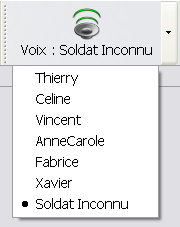

Pour pouvoir choisir la voix avec laquelle on va jouer la prosodie il suffit de cliquer sur Lecture > Selection d'une voix ou de cliquer simplement sur le boutton

Lors de la lecture, le logiciel jouera le chant avec la voix sélectionnée